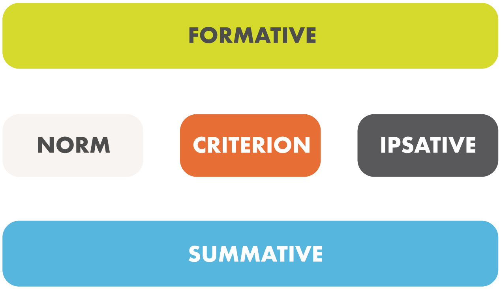
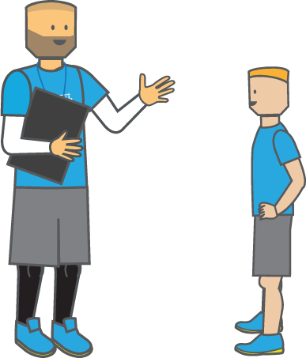
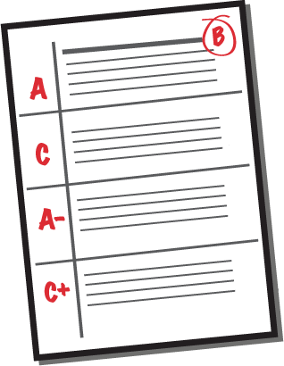
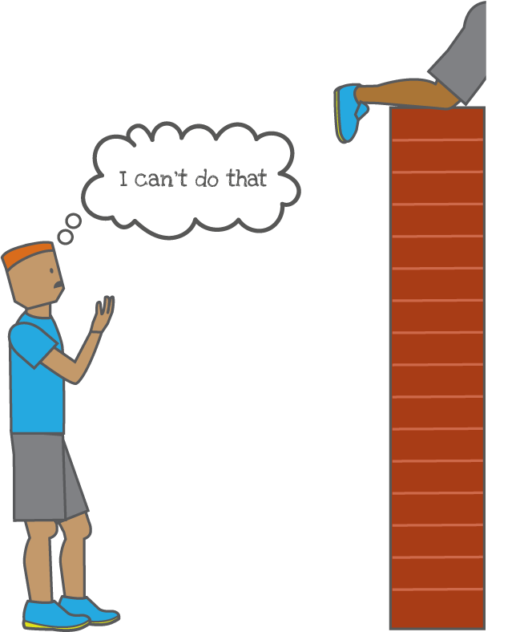
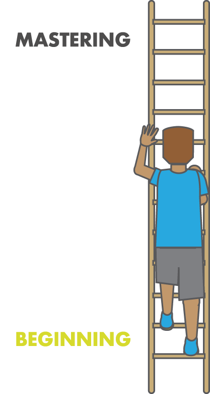
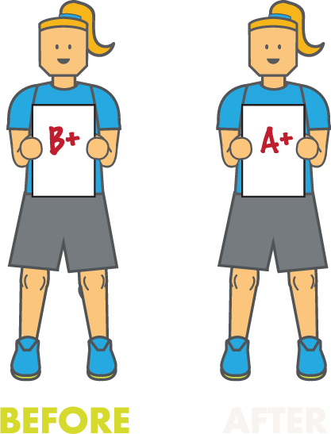

Assessment is essential and integral to effective teaching and learning in PE as it provides information on students’ strengths, weaknesses, and educational requirements, which informs future planning and teaching [1-9]. Assessment is also vital for the provision of grades (achieved and predicted), informing others of attainment (parents, teachers etc.), and is used to judge the effectiveness of teachers and the school [7, 10]. Moreover, feedback from assessment has been recognized for increasing pupil motivation and engagement, and helps create a positive learning environment [11, 12].
In PE there are many modes of assessment but for the purpose of this article we will focus on the most significant modes (formative and summative) and reference systems (criterion, norm, and ipsative).

Formative assessment has been described as ‘ongoing’ and takes place during teaching-learning situations in PE. It is important as it involves providing pupils with constructive feedback, diagnosing future learning needs, describing students’ progress, and determining their strengths and weaknesses [2, 3, 4, 13, 14]. It has also been closely related to ‘Assessment for Learning’ and has been commended for its emphasis on describing progress, identifying pupils’ needs, planning for next steps in learning, and providing vital information for summative assessment [1, 15, 16].


Summative assessment is an overall assessment which takes place at the end of an interval, unit, key stage or year. It has also been described as ‘Assessment of Learning’ as it provides a synopsis of students’ levels of attainment at the end of a specified interval, and is used to provide examination grades [1, 2, 7, 9, 15]. Summative assessment has been asserted as the ‘systematic recording of the pupil’s overall progress and achievement, and is made up of a series of formative assessments’ [3].
As previously mentioned, there are three reference systems that have been used for assessment in PE, these are: Norm Referenced; Criterion Referenced; and Ipsative Referenced assessment [1, 2, 7, 17, 18]. Norm Referenced assessment is when students are compared with one another [7, 18]. This form of assessment has been regarded as ‘group centred’, as comparisons within the group are made to establish how successful the pupil is in relation to others of the same age [2]. However, Norm Referencing assessment has been criticised, as the goal for learning is a moving target due to other pupils’ performances determining the standard of learning [18]. This can be detrimental to students’ self-esteem, as when pupils progress to ‘above average’, it is at the expense of others who become ‘below average’ [2]. Additionally, dependent upon the ability of the class determines the students’ attainment, as in a high calibre class pupils may receive on average a lower mark, compared to a mediocre class who receives on average a higher mark [17]. Notwithstanding, Norm Referencing has been deemed inevitable, as it is used in public grading systems, and for selecting pupils for school representation and teams [2].


Criterion Referenced assessment is comparing pupils performance to a predetermined criteria or standard [2, 7, 17, 18]. For example, in the UK the National Curriculum’s attainment targets/level descriptors, GCSE’s, A Levels, and other national governing body awards are all examples of Criterion Referenced assessment since students’ performances are judged based on established criteria [7]. Criterion Referencing is ‘activity centered’ assessment, as all students can potentially achieve the target, eliminating comparison with others, thus promoting collaborative learning as pupils are working together towards a common goal [18]. Criterion Referenced assessment should not to be viewed in conflict with the other referencing systems, but rather to be used in conjunction with them [2]. Therefore, the advantage of Criterion Referenced assessment and set standards is that it provides educators with a more accurate measuring stick to assess pupils learning, and provides details of the additional work students must complete to reach the next level of achievement [18].
Ipsative Referencing assessment compares a pupil’s current performance with their previous performance in the same activity [2, 7, 17]. Ipsative Referencing is regarded as ‘child centered’, as pupils focus on beating their previous achievement, which is useful for recording learning and progress [2, 7]. This form of referencing promotes a mastery climate, again eliminating comparison with others, which enhances pupils’ self-esteem, motivation, and accountability [2]. Furthermore, Ipsative Referencing provides a foundation for self and teacher assessments in Records of Achievement [2].


In conclusion, Norm, Criterion, and Ipsative referenced assessment should not be viewed as mutually exclusive, as they are all beneficial for supporting students’ learning when employed together. It is expected that all PE teachers implement a range of assessment methods in every lesson, as it helps teachers and pupils to progress in their teaching and learning. For assessments to be managed efficiently and effectively, it is important for the criteria to be precise, clearly identified, and related to each other [2]. Moreover, to develop appropriate and reliable assessment criteria calls for dedicated and devoted teachers, who possess strong observational skills, detailed knowledge of activities and their techniques, and can make sound judgements of pupils’ ability [2, 8, 19].
References
- Piotrowski, S. (2000) Assessment, Recording and Reporting. In, Bailey, R., and Macfadyen, T. (Eds) Teaching Physical Education 5-11. London: Continuum. pp. 49-61
- Carroll, B. (1994) Assessment in Physical Education. Burgess Science Press: Basingstoke.
- Mawer, M. (1995) The effective teaching of Physical Education. Essex: Pearson Education Limited. pp. 229-248
- Bailey, R. (2001) Teaching Physical Education: A handbook for primary and secondary school teachers. London: Kogan Page. pp. 137-152
- Coates, B (2001) Assessment Planning for KS3 PE. Cambridge: Pearson Publishing. pp. 1-13
- Walker, D., (2001) Assessment, Recording and Reporting of Pupil Attainment in Physical Education – A Voice form the Real World. The British Journal of Teaching Physical Education. 32(4): pp. 24-25
- Macfadyen, T., and Bailey, R. (2002) Teaching Physical Education 11-18. London: Continuum. Pp. 75-89
- Lockwood, A., and Newton, A. (2004) Assessment in PE. In Capel, S. (Eds) Learning to Teach Physical Education in the Secondary School: A companion to School Experience. Second Edition. Oxon: RoutledgeFalmer. pp.165
- O’Neill, J., and Ockmore, D. (2006) Assessing pupils’ learning. In Capel, S., Breckon, P., and O’neill, J. (Eds)A Practical Guide to Teaching Physical Education in the Secondary School. Oxon: Routledge. pp. 133-143
- Peach, S., and Bamforth, C. (2003) Tackling the problems of Assessment, Recording and Reporting in Physical Education and Initial Teacher Training 2: an update and evaluation of the project and recommendations for future good practive. The British Journal of Teaching Physical Education. 34(1): pp. 22-26
- James, A.R., Griffin, L., and Dodds, P. (2009) Perceptions of middle school assessment: an ecological view. Physical Education and Sport Pedagogy. 14(3): pp. 323-334
- Koka, A. and Hein, V. (2006) Perceptions of teachers’ positive feedback and perceived threat to sense of self in physical education: a longitudinal study. European Physical Education Review. 12(2): pp 165-179
- Morley, D. and Bailey, R. (2004) Talent Identification and provision in PE – A strategic approach. The British Journal of Teaching Physical Education. 35(1): pp. 41-44
- Strand, B.N., and Wilson, R. (1993) Assessing sport skills. Leeds: Human Kinetics
- Williams, A. (1988) Teaching Physical Education: A Guide for Mentors and Students. London: David Fulton Publishers Ltd. pp.67-78
- Giles-Brown, L. (2006) Physical Education Assessment Toolkit. Leeds: Human Kinetics.
- Piotrowski, S., & Capel, S. (2000) Formal and Informal Modes of Assessment in Physical Education. In: Capel, S., & Piotrowski, S. (Eds.) issues in physical education. London: RoutledgeFalmer. pp. 99-115